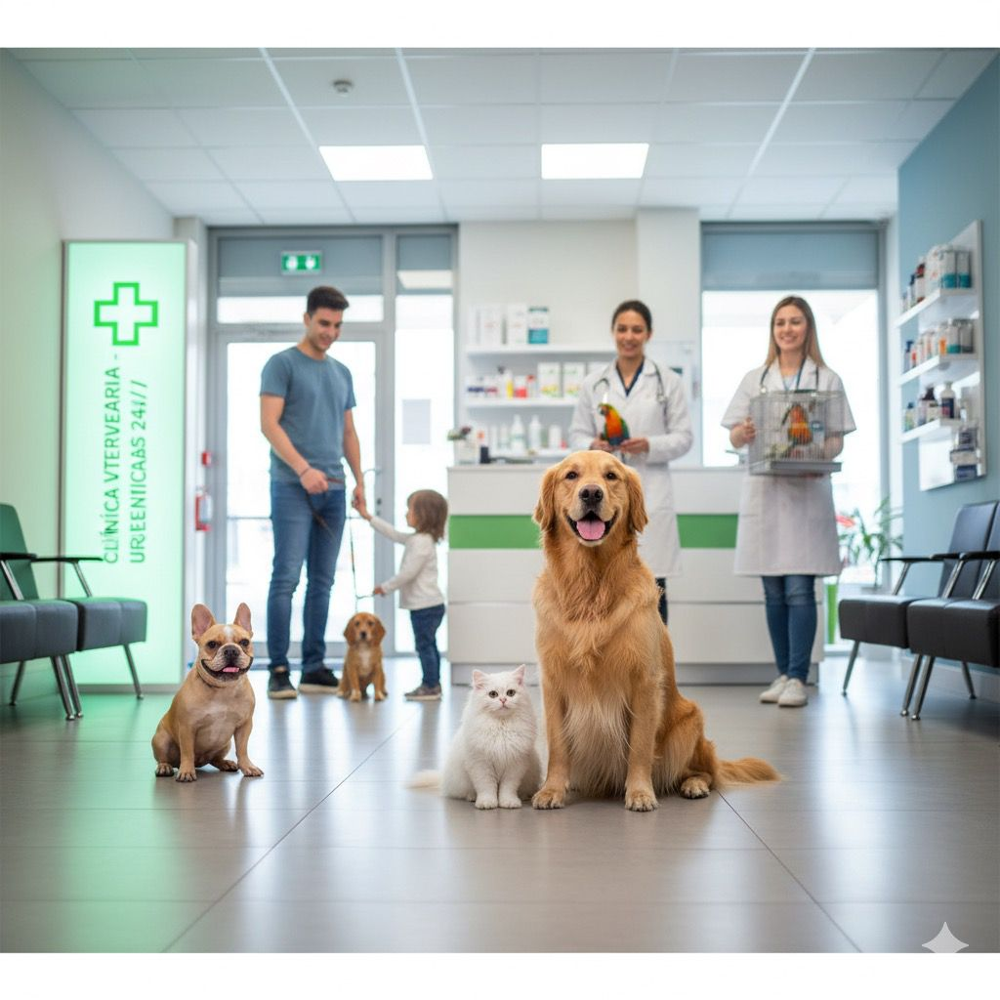
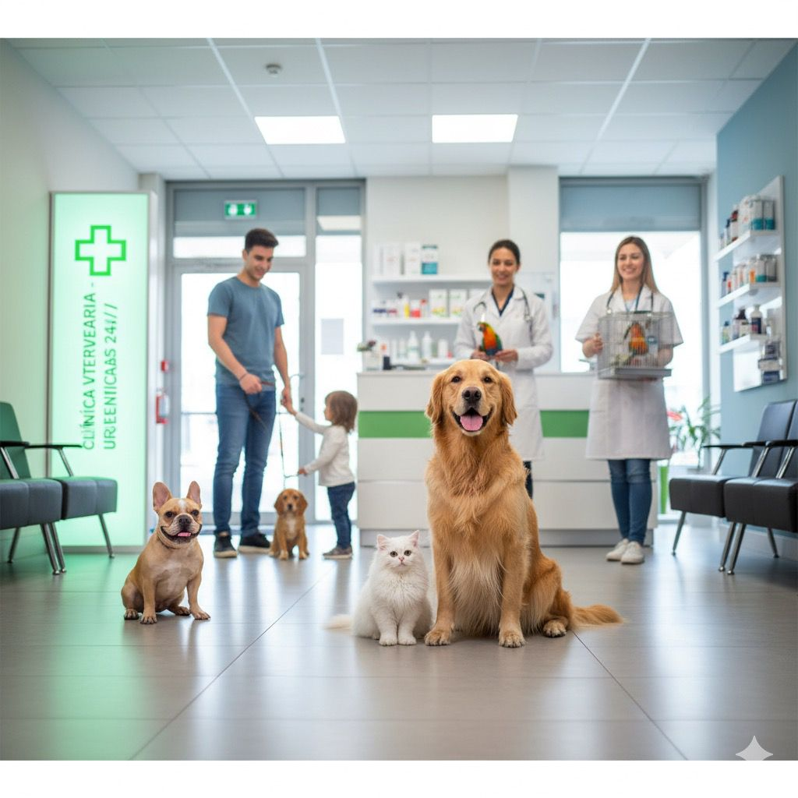
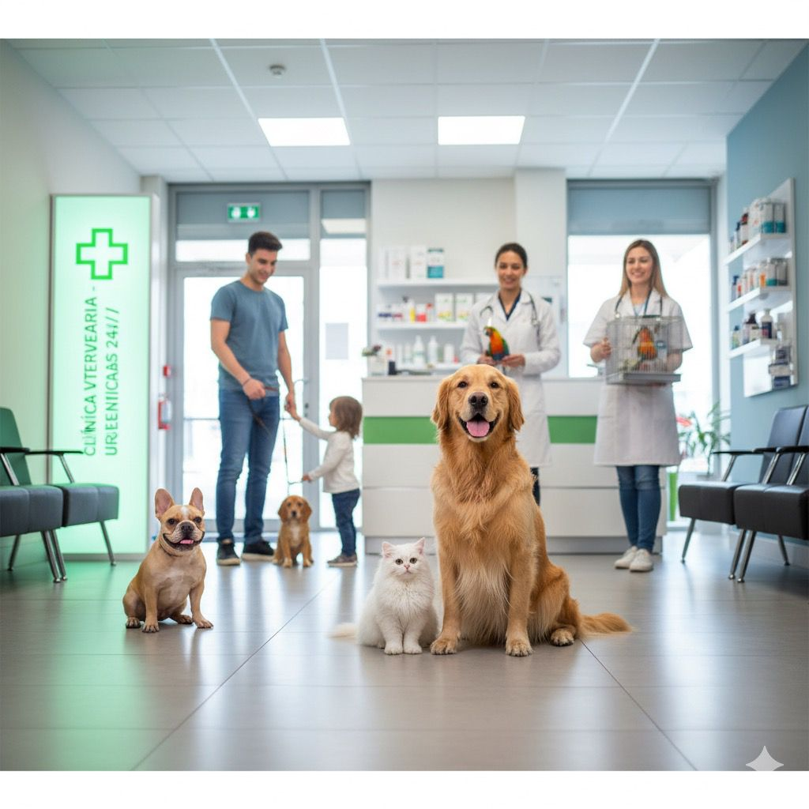
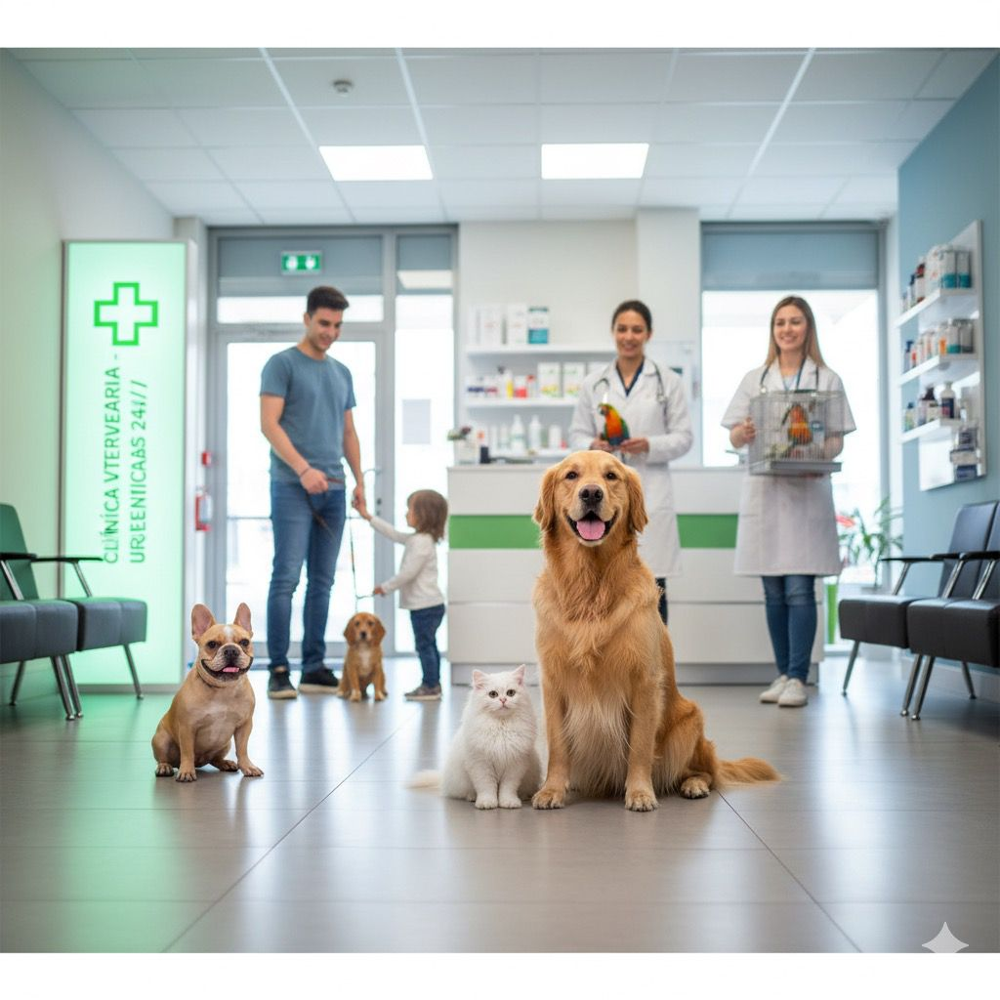

Revisiones medicas completas para mantener el bienestar de tu mascota.

Servicio de higiene y cuidado estetico para tus mascotas

Trataminetos efectivos para eliminar parasitos internos y externos de tus mascotas.

Atencion medica inmediata para emergencias las 24 del dia.
En nuestra veterinaria, nos dedicamos a brindar el mejor cuidado y atención a tus mascotas. Nuestro equipo de profesionales está comprometido con la salud y el bienestar de tus compañeros peludos.
⭐⭐⭐⭐⭐
“Excelente atención, mi perrita llegó muy asustada y el veterinario fue súper paciente. Me explicaron todo con detalle y el trato fue muy humano. ¡Totalmente recomendados!” — Laura G.
⭐⭐⭐⭐
“Llevé a mi gato para una cirugía y todo salió perfecto. El lugar es limpio, moderno y se nota que aman a los animales. Los precios son justos para la calidad que ofrecen.” — Carlos Méndez
⭐⭐⭐⭐
“El personal fue amable desde que entré. Me ayudaron incluso con la transportadora y revisaron a mi cachorro con mucho cuidado. Sin duda volveré para sus vacunas.” — Andrea López
⭐⭐⭐
“Muy buen servicio, aunque tardaron un poco en atendernos porque había mucha gente, valió la pena la espera. Se nota que los doctores saben lo que hacen.” — Jorge Ramírez